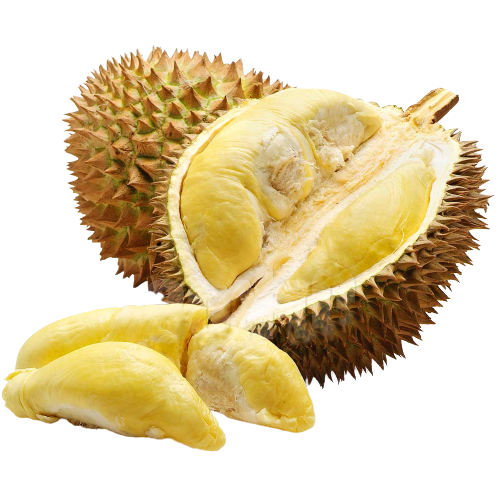

Durian ialah buah daripada beberapa spesies pokok dalam genus Durio. Buah yang dihasilkan ini bersaiz besar, beraroma kuat dan isinya dilindungi oleh kulit yang berserat dan penuh duri, daripada duri-duri kulit buah itulah durian mendapat namanya. Ia amat terkenal di Asia Tenggara dengan gelaran "raja buah".
